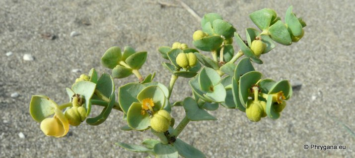
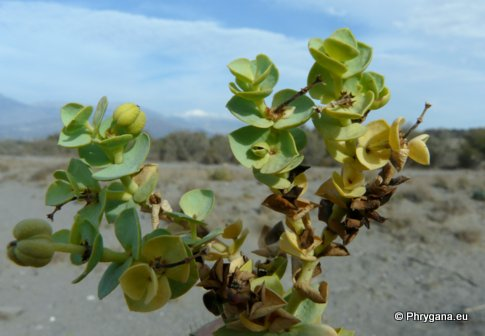
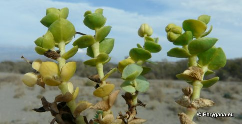
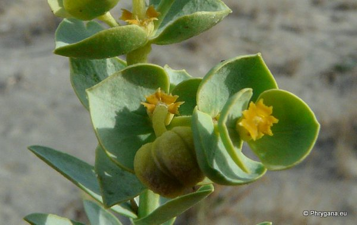
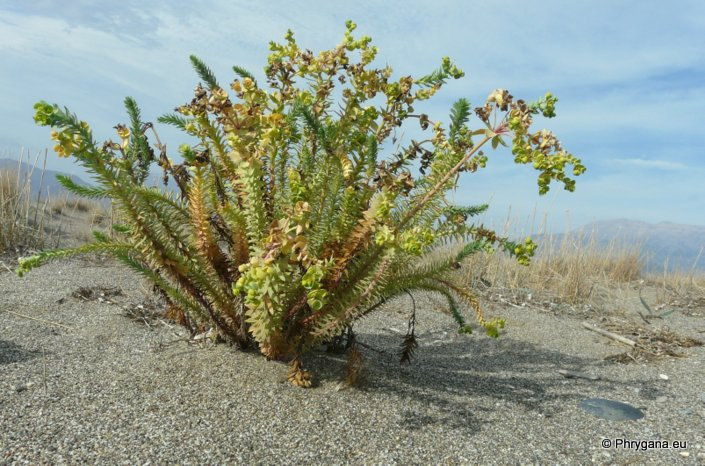
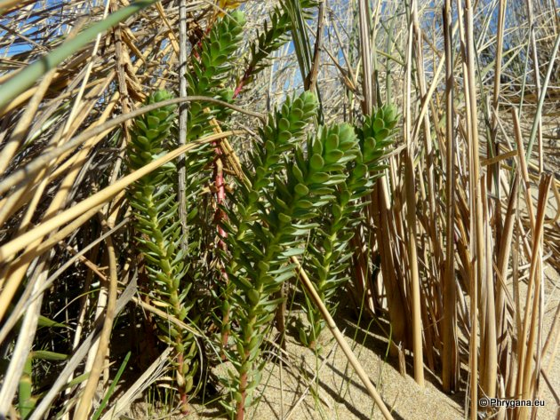

| PHRYGANA | Fauna | Flora | Galles | liste des espèces |
contact -
info - commentaires phrygana1 (at) gmail.com |
| Particularités crétoises | nouveautés | Mines | ressources naturelles |
| Euphorbia paralias L. |
| 423 | Flora | EUPHORBIACEAE | Euphorbia L. |
|  Euphorbia paralias (Tymbaki) Pirghiotisa plage 02 décembre 2012 |
|
l'Euphorbe des dunes -- Sea Spurge -- Zeewolfs --
Dünen-Wolfsmilch --Euforbia maritima -- Lechetrezna de las playas --
Παράλιος Φλώμος |
|
|
|
|
| Feuilles: feuilles alternes, nombreuses, entières, non dentées, serrées-imbriquées, charnues, ovales-oblongues à elliptiques, dressées et convexes sur la face supérieure, vert grisâtre, longues de 15 -30 mm; limbe coriace; pas de stipules | |
| Tiges: dressées, feuillées densément, ramifiées à la base | |
| Fleurs: en ombelles à 4-6 rayons; bractées ovales, concaves, vertes, non soudées entre elles; glandes réniformes, cornues | |
| Fruit: capsule 3 - 5 mm, trigone, à surface granulée; graines sans caroncule, glabres, ovoïdes, lisses, longues de 3 mm, gris pâle | |
| Hauteur: 20 - 70 cm | Type biologique: chaméphyte herbacé |
| Floraison: avril mai juin juillet août septembre octobre novembre décembre | |
| Altitudes: 0 - 10 m | |
| Statut en Crète: indigène | |
| Biotopes en Crète: sables littoraux, plages de petits galets | |
| Distribution: région Méditerranéenne, côtes atlantiques, côtes de la mer Noire, Macaronésie | |
|

 Euphorbia paralias (Tymbaki) Pirghiotisa plage 02 décembre 2012 |
|
 Euphorbia paralias (Tymbaki) Pirghiotisa plage 02 décembre 2012 |
|
Euphorbia paralias (Tymbaki) Pirghiotisa plage 02 décembre 2012 |
|
 Euphorbia paralias (Tymbaki) Pirghiotisa plage 02 décembre 2012 |
|
 Euphorbia paralias (Georgiopouli) Dzougari plage 01 février 2013 |
| 15 février 2013 |
| © paul fontaine -- © Phrygana.eu 2007 -- 2013 |